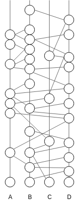
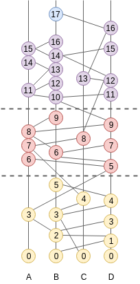

Lachesis Consensus¶
Lachesis is based on our own interpretation of Poset, but also builds upon other techniques that facilitate coordination within distributed systems. Here, we give a high-level overview of the most important concepts that inspired the development of Lachesis and how they all fit together. This document is also intended for a non-technical audience.
Common Knowledge¶
Roughly speaking, attaining common knowledge within a group means “everyone knows that everyone known that everyone knows…” to infinity. It is a necessary and sometimes even sufficient condition for reaching agreement and for coordinating actions. This connection was perhaps first drawn by David Lewis in his work on conventions, which led to the original definition. It is a fascinating topic that goes far beyond computer systems. We highly recommend the book Reasoning About Knowledge for a very thorough treatment of the subject.
To get an intuition about the link between common knowledge and agreement, we can look at the well know ‘coordinated attack’ problem. Two generals and their respective armies are posted on opposite sides of an enemy city perched on top of a hill. They must decide to attack together, at the same time, or not at all. Indeed, if one general attacks alone, he will lose the battle. The only means of communication is a messenger on horseback (always at risk of being intercepted by the enemy). How do they coordinate their attack?
One general, having made the decision to attack, could send a messenger to the other general. Upon receiving that message, the second general knows that the first general wants to attack, but he doesn’t know that the first general knows that he received the message. So he sends an acknowledgment. Upon receiving the acknowledgment, the first general, knows that the second general knows that he wants to attack, but he doesn’t know that the second general knows that he received the acknowledgment… There is always this element of doubt preventing either general from committing to a decision. It quickly becomes apparent that what is needed is common knowledge.
The dilemma is that pure common knowledge is not attainable in practical situations; particularly in asynchronous message passing systems with unreliable transports (like the two generals). Hence, we have to relax our requirements and rely on approximations of common knowledge. In Lachesis, we drop the simultaneity and allow participants to decide at different times.
Gossip About Gossip¶
One way to approximate common knowledge in this context is to use a communication protocol where participants regularly tell each other everything they know about what everyone else knows. These are usually referred to as Full Information Protocols, aka ‘gossip about gossip’.
Members locally record the history of the gossip protocol in a directed acyclic graph, a DAG, where each vertex represents a gossip event and the edges connect a vertex to the immediately-preceding vertices. Roughly speaking, a member, say Alice, will repeatedly choose another member at random, say Bob, and attempt to learn what he knows that she doesn’t know. She will send him a sync request saying ‘Hey, here is what I know; what do you know that I don’t know?’. Bob will compute the difference and respond with a set of events that he knows and Alice doesn’t yet know. Alice will insert these events in her DAG, and create a new event to record this sync. The newly created event includes the hashes of her last event, and Bob’s last event. Hence, the DAG is connected by a succession of recursive cryptographic hashes; like a blockchain, but two-dimensional. Each event contains the hashes of the events below it and is digitally signed by its creator. So the entire graph of hashes is cryptographically secure.
The communication graph is a very rich data structure from which we can extract all sorts of information about the history of gossip, and also derive a consistent ordering of the events, even in the presence of faulty participants. But let’s take it step by step.
Lamport Timestamps¶
Leslie Lamport introduced a seminal paper in 1978, entitled “Time, Clocks, and the Ordering of Events in a Distributed System”. In this paper he describes a distributed algorithm for extracting a consistent total ordering of the events in an asynchronous message passing system, using a concept of Logical Clocks.
The algorithm follows some simple rules:
A process increments its counter before each event in that process;
When a process sends a message, it includes its counter value with the message;
On receiving a message, the counter of the recipient is updated, if necessary, to the greater of its current counter and the timestamp in the received message. The counter is then incremented by 1 before the message is considered received.
Ties are broken using an arbitrary function (eg. sort by hash)
This is a distributed algorithm. Each process independently follows these rules, and there is no central synchronizing process or central storage. Synchronization is achieved because all processes order the commands according to their timestamps, so each process uses the same sequence of commands. A process can execute a command timestamped T when it has learned of all commands issued by all other processes with timestamps less than or equal to T.
However, the resulting algorithm requires the active participation of all the processes. A process must know all the commands issued by other processes, so that the failure of a single process will make it impossible for any other process to execute commands, thereby halting the system. Lachesis implements Lamport Timestamps on top of the poset, but with added steps for Byzantine Fault Tolerance.
This paper triggered a wave of research on BFT consensus algorithms. Some famous solutions are Paxos, PBFT, and Tendermint. Ultimately most of them are variations of a very well known paradigm in computer science: two-phase commit.
Two-Phase Commit¶
We are not necessarily aware of it, but we all solve the consensus problem in real life situations on a daily basis. This is illustrated in the following quote from a blog:
“Simple solutions to the consensus problem seem obvious. Think about how you would solve a real world consensus problem - perhaps trying to arrange a game of bridge for four people with three friends. You’d call all your friends in turn and suggest a game and a time. If that time is good for everybody you have to ring round and confirm, but if someone can’t make it you need to call everybody again and tell them that the game is off. You might at the same time suggest a new day to play, which then kicks off another round of consensus.”
Most distributed consensus protocols are special adaptations of this concept. There is a theoretical result that says one can’t attain BFT, in the same conditions, with ⅓ of malicious participants. So, with the assumption that at least ⅔ of participants are good, the usual solution resembles something like this:
Someone proposes a value
Everyone votes on the proposal and broadcasts their vote
Every one confirms they have received ⅔ of votes for the same proposal, and broadcasts this confirmation.
When a participant collects ⅔ of such confirmations, it commits the value.
Usually, the solutions vary around who gets to propose the value - aka the leader - and how this leader is elected or changed.
Virtual Voting¶
A similar algorithm can be run internally thanks to the communication graph by using the concept of virtual voting. Instead of exchanging votes directly, we compute what other participants would have voted, based on our knowledge of what they know.
First, the Poset defines a concept of Strongly Seeing:
“If there are n members, then an event w can strongly see an event x, if w can see more than 2n/3 events by different members, each of which can see x”.
Strongly Seeing is analogous to receiving votes from two thirds of participants in the first phase of the two-phase commit.
Also, we do not need a leader to propose a value. Instead, participants compute virtual cuts in the poset, called rounds, which allow processing events in batches. This is also a distributed algorithm where all members end up with the same rounds. Roughly speaking, starting at round 0, when we reach a point when ⅔ of members can strongly see the cut from the previous rounds, we start a new round. When there is common knowledge about a round, attested by Strongly Seeing, we can decide on the order of event below that cut. The details of the algorithm are best described in the original poset whitepaper.
So this algorithm doesn’t need a leader. All participants run the algorithm locally, process rounds at their own speed, and end up outputting the same batches of ordered events. Lachesis takes these batches of events and projects them onto a blockchain.
Blockchain¶
A blockchain is a one-dimensional data-structure made of cryptographically chained blocks. It is convenient to map our two-dimensional poset onto a blockchain because the blockchain is much easier to work with when it comes to consuming and verifying the output of the consensus algorithm. The concatenation of blocks, and the transactions they contain, is recursively secured by digital signatures. A block that obtains enough signatures (>1/3) can immediately be considered valid, along with all the blocks that precede it, because it contains a signed fingerprint of the list of blocks so far. The projection method is described in From Poset to Blockchain.
So the output of Lachesis is a sequence of blocks; the interface between the app and Lachesis is a blockchain interface. This makes it convenient for developers to plug into Lachesis, and provides a base for building light-clients and cross-chain communication protocols. We believe that the p2p internet is moving towards a landscape of interconnected blockchains, the so called internet of blockchains, an Lachesis is built with this in mind.